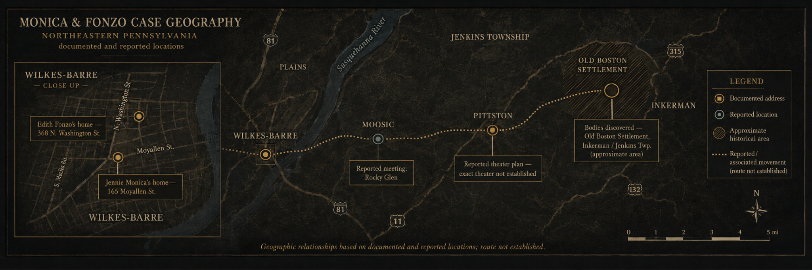
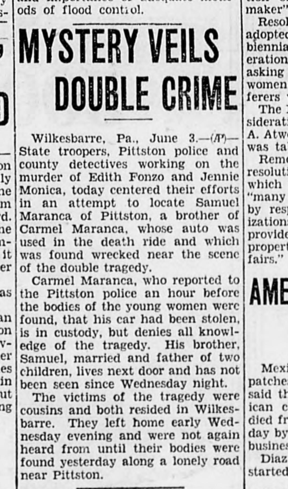
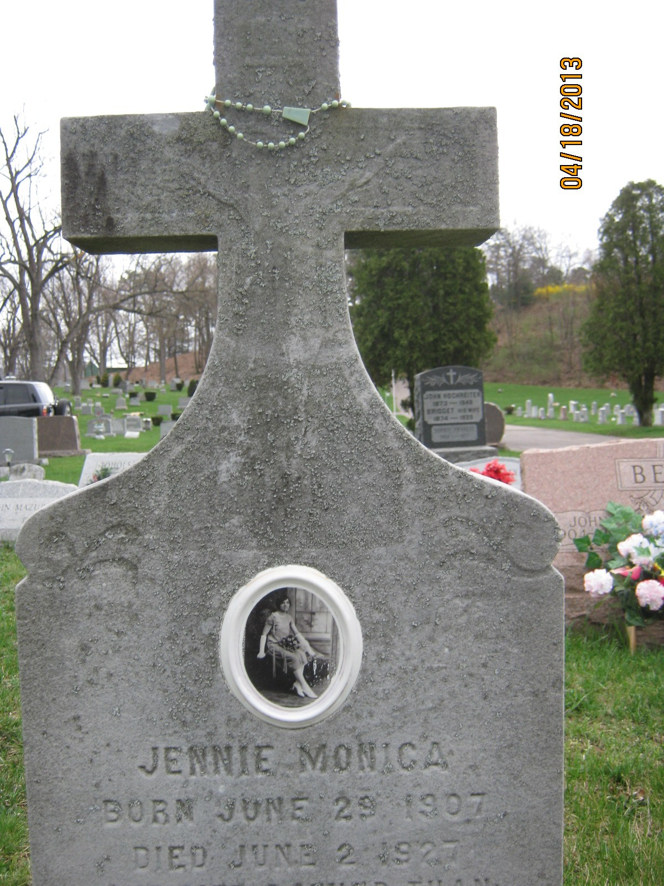
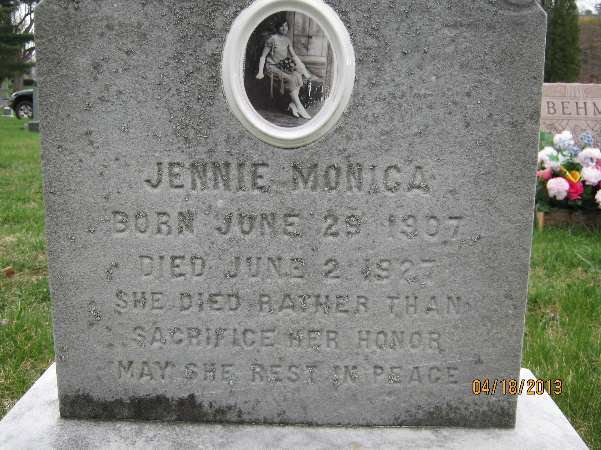
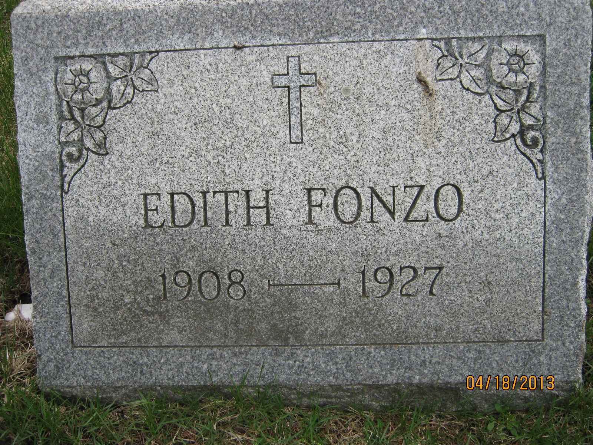
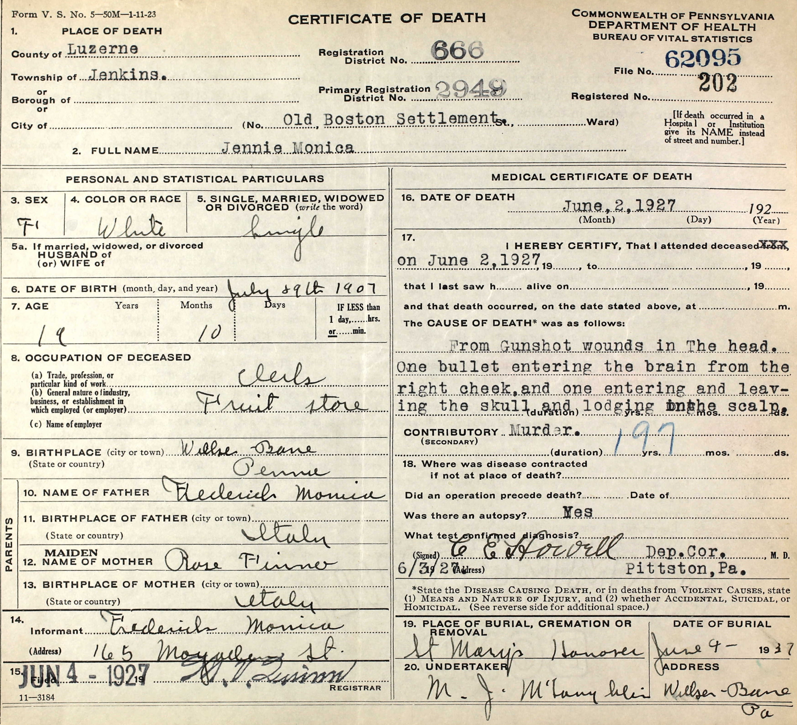
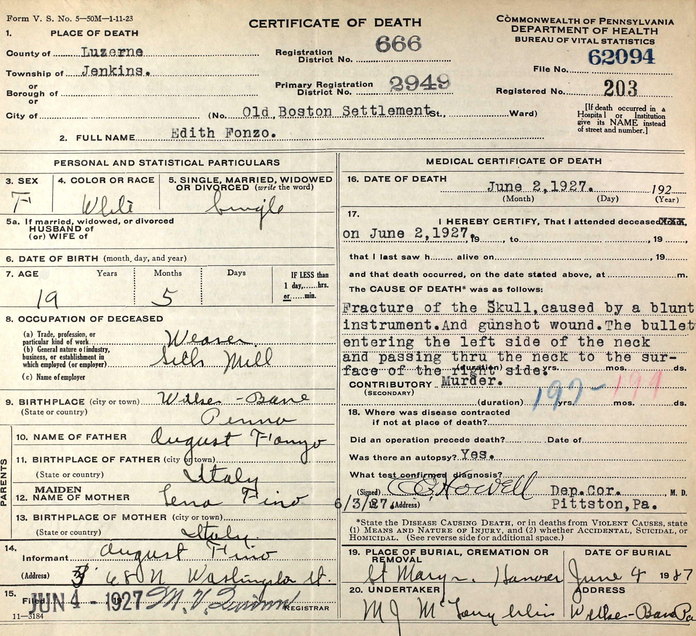

The two cousins
A fruit store, a silk mill, a mile apart
Jennie Monica was a clerk in a fruit store. Edith Fonzo was a weaver in a silk mill. Both were nineteen, both were born in Wilkes-Barre to parents who had come from Italy, and they lived about a mile apart—Jennie at 165 Moyallen Street, Edith at 368 North Washington.
On Thursday, June 2, 1927, they were found dead near Inkerman, in Jenkins Township. Two days later their fathers went to a registrar and supplied the details that became their death certificates: Frederick Monica for Jennie, August Fonzo for Edith. The two forms were filed the same day, signed by the same deputy coroner, and handled by the same undertaker. Each carries the same one-word contributory entry—“Murder.”
The state’s index is where the record is firmest. Edith appears as certificate 63094; Jennie follows as certificate 63095—consecutive entries, both reading Luzerne County and June 2. That numbering sets the two records side by side in a ledger. It does not establish the order of anything that happened, and the certificate copies in section 08 unsettle even the numbers: they are stamped one thousand lower, 62094 and 62095. This edition records that conflict rather than resolving it.
The papers called the two women cousins. Their certificates give their mothers’ maiden names as Rose Finno and Lena Fino—possibly one surname written by two different hands, which would make them cousins through their mothers. “Jennie Monica” and “Edith Fonzo” are the index spellings; contemporary newspapers also printed Monico, Fonza, and other variants. Those are worth knowing when searching archives, but they are no grounds for overwriting the official forms.
The last night
Decoration Day at Rocky Glen
Monday, May 30, 1927 was Decoration Day, and Jennie and Edith spent it at Rocky Glen, the amusement park at Moosic, among a group of other young women. That is where they met Samuel Marranca, twenty-four, and John Falcone, twenty-three, both of Pittston. The four made a plan for Wednesday night: a play at a theater in Pittston.
On the Wednesday, Jennie telephoned Edith to say she had a date with Falcone. Edith’s sister would later testify that she watched Jennie get into a car with him on North Washington Street that evening, meaning to meet Edith downtown. Hers is the last recorded sighting of either woman by someone who knew them.
The earliest wire dispatch located for this project is thinner than any of that. It says only that the cousins left home early Wednesday evening. The park, the introduction, the telephone call, the sister’s testimony—all of it reaches us through later accounts of the 1927 reporting and of what was said in court, not through case documents obtained for this edition.
Edith did not appear the next morning for her shift at the Wyoming Valley Lace Mills—the works her death certificate would describe simply as a silk mill.

The road at Inkerman
Seventy-five feet apart on an isolated road
A berry picker found them. The road ran through the Old Boston Settlement at Inkerman, about five miles east of Pittston—what news accounts of the day called a lonely wagon road. The two women lay roughly seventy-five feet apart along it. Jennie had been shot twice in the head and was found without clothing, her clothes lying nearby. Edith was clothed, her garments torn, with a gunshot wound and a fractured skull. An abandoned Chrysler stood near them.
A later writer read Edith’s torn clothing as evidence that she fought. That is a reading, not a finding, and Jennie’s state of undress establishes no particular offense on its own. The certificates in section 08 record cause of death, not the scene, and the investigative file has never been obtained. Early syndicated reports supplied vivid detail about the road, the car, and possible witnesses—detail that does not always agree with itself. This page leaves those accounts unreconciled rather than assembling one confident scene out of the pieces.
The Chrysler
One Chrysler, two stories about it
An automobile became the investigation’s central physical thread, and the sources disagree about how it got there. The Associated Press dispatch of June 3 linked a wrecked car belonging to Samuel Maranca’s brother to the case. It reported that Carmel Maranca had told Pittston police the car was stolen—a report he made about an hour before the bodies were found. The dispatch does not say when the alleged theft was supposed to have happened.
The 2025 reconstruction tells it differently. There the car is not wrecked but abandoned beside the bodies, and it is traced to Sam’s brother—“Carmella” in that account, “Carmel” in the 1927 wire—who is said to have told state police he had lent it to Sam the day before. Reporters may simply have caught different statements at different moments, and a car can be both wrecked and abandoned. The sources reviewed here do not reconcile them, and this page does not choose between them.
“Stolen”
Carmel Maranca reportedly told Pittston police that the automobile had been stolen. He made that report about an hour before the bodies were found; the dispatch does not date the alleged theft.
“Loaned”
The brother reportedly said he had loaned the Chrysler to Sam the previous day.

Associated Press dispatch, Capital Journal (Salem, Oregon), June 3, 1927. The out-of-state reprint preserves an early surviving public version and its uncertainties.
Open the complete archival scanThe Buffalo lead
Two names, and a trip to Buffalo
Suspicion settled quickly on Samuel Marranca—also printed Maranca—and John Falcone. Falcone went to Buffalo, driven there by his friend Carmel Marletti, twenty-three, of Pine Street, Pittston, whose surname the papers also set as Merletto and Marletto. Buffalo authorities held Falcone briefly, and he is reported to have talked his way free before Pennsylvania troopers arrived with a warrant. Marranca had gone as well.
Newspapers of the day reported that Falcone, in hiding, admitted something incriminating to a friend he visited in Buffalo, a barber. That story has been retold for decades. What does not exist, in anything located for this project, is a transcript, a signed statement, sworn testimony, or a court finding behind it—which leaves it newspaper-reported hearsay, and a long way from a confession.
Suspicion shaped the search. It did not resolve the murders.
The accessory trial
A jury answered a smaller question
Carmel Marletti went on trial that September—not for killing either woman, but as an alleged accessory after the fact. On the fifteenth, a Luzerne County jury found him not guilty. That November, District Attorney Thomas M. Lewis withdrew a second indictment against him.
It is an easy distinction to lose in the retelling. The jury was asked whether Marletti had helped someone after the fact. It was not asked who killed Jennie Monica and Edith Fonzo, and it did not answer that. No source reviewed for this edition documents a murder trial of Marranca or Falcone at all. Calling either man a killer would go past the record, however the story has been told since.
The search after 1927
A detective outside San Antonio, four years on
The case did not end with the accessory trial. In May 1931, according to local reporting reproduced later, Detective Leo Grohowski went first to Buffalo and then to the country outside San Antonio, following word that the wanted men were living under assumed names. The account records no arrest.
After that the trail, as far as the public record runs, stops. People surface later with the same surnames—sometimes the same full names—but without matching records they cannot responsibly be called these men. The public sources reviewed through July 24, 2026 show no murder trial and no conviction. That is a statement about the sources that were found; it says nothing about what may sit in a file that was never made public. None of the later leads established who killed Jennie and Edith.
Graves & records
Two graves at St. Mary’s
“SHE DIED RATHER THAN SACRIFICE HER HONOR
MAY SHE REST IN PEACE”
Both women are buried at St. Mary’s Cemetery in Hanover Township. Jennie’s family gave her a stone cross with her photograph set into it, and the words quoted here. Edith’s marker carries her name, a cross, a carved flower in each upper corner, and two years.
The inscription should not be made to speak beyond the stone. It is memorial language—what the people who buried her chose to say in 1927—not this site’s judgment and not a finding about what happened. Nothing comparable is claimed for Edith, because no inscription for her was verified in the sources reviewed.
The images below were supplied to this project as copies from the two Find a Grave memorial pages. They were not retrieved directly from a Pennsylvania archive, and no cemetery register, plot identifier, or grave coordinates have been obtained.
The markers at St. Mary’s
Three photographs of the two graves. Each opens the full-size local copy in a new tab.
-

Jennie Monica · monument A cross-shaped monument with an oval portrait medallion set above the carved inscription. A rosary has been hung across the arms of the cross.
Photograph credited by Find a Grave to Elena Castrignano; added April 19, 2013. The camera date stamp reads April 18, 2013. User-supplied copy from the Jennie Monica memorial page.
-

Jennie Monica · inscription The full carved text: both dates and the memorial phrase quoted above. Weathering and lichen speckle the letters, but the inscription is legible.
Photograph credited by Find a Grave to Elena Castrignano; added April 19, 2013. The camera date stamp reads April 18, 2013. User-supplied copy from the Jennie Monica memorial page.
-

Edith Fonzo · marker A rectangular granite marker reading EDITH FONZO · 1908 — 1927, with a carved cross and floral corner ornament. It carries years only, and no memorial phrase.
Photograph credited by Find a Grave to Elena Castrignano; added April 19, 2013. User-supplied copy from the Edith Fonzo memorial page.
Two dates for one birthday
Jennie Monica’s birth date is not settled. The stone and the certificate give different months, and this site does not choose between them.
-
Carved marker
June 29, 1907
The inscription reads BORN JUNE 29 1907 above DIED JUNE 2 1927. The lettering is weathered and lichen-spotted but legible.
-
Find a Grave index
June 29, 1907
The memorial page transcribes the stone the same way. It agrees with the carving rather than testing it against another record.
-
Certificate copy
July 29, 1907
The handwritten date-of-birth field reads July, not June. The day and year match the stone; only the month differs.
Two sources against one would be an easy call, except that the certificate does not disagree with itself. It also gives her age as 19 years, 10 months, which is arithmetically consistent with a birth in July 1907 and not with one in June—so the month and the age entry point the same way. That is worth recording, not deciding: the form was completed from information her father supplied two days after her death, and the marker was cut later by the same family. Edith Fonzo’s birth date is not in conflict because no source reviewed here supplies a full one—her certificate copy leaves the field blank and her marker gives the year alone.
The death certificate copies
Content notice. Both certificates are official documents that state, in clinical medical language, the injuries that killed these two women. Both are shown in full below. Either panel can be collapsed using its heading, and the summaries outside the panels stay non-graphic.
Jennie Monica · certificate copy Contains a clinical description of fatal injuries

Image credited by Find a Grave to Rich Stackhouse; added April 2, 2016. User-supplied copy from the Jennie Monica memorial page.
- Name as written
- Jennie Monica
- Place of death
- Old Boston Settlement, Jenkins Township, Luzerne County
- Date of death
- June 2, 1927
- Stamped file no.
- 62095 · registered no. 202 · registration district 666
- Date of birth as written
- July 29, 1907 (reading uncertain)
- Age given
- 19 years, 10 months
- Occupation
- Clerk, fruit store
- Birthplace
- Wilkes-Barre, Pa.
- Parents as written
- Frederick Monica, born Italy; Rose Finno, born Italy
- Informant
- Frederick Monica, 165 Moyallen Street
- Cause of death
- Gunshot wounds of the head; contributory entry, “Murder.” An autopsy is marked as performed. The full wording is on the image.
- Burial
- St. Mary’s, Hanover — June 4, 1927
- Certified / filed
- C. E. Howell, deputy coroner, Pittston, June 3, 1927; filed June 4, 1927
Edith Fonzo · certificate copy Contains a clinical description of fatal injuries

Image credited by Find a Grave to Rich Stackhouse; added April 2, 2016. User-supplied copy from the Edith Fonzo memorial page.
- Name as written
- Edith Fonzo
- Place of death
- Old Boston Settlement, Jenkins Township, Luzerne County
- Date of death
- June 2, 1927
- Stamped file no.
- 62094 · registered no. 203 · registration district 666
- Date of birth as written
- Field left blank
- Age given
- 19 years, 5 months
- Occupation
- Weaver, silk mill
- Birthplace
- Wilkes-Barre, Pa.
- Parents as written
- August Fonzo, born Italy; Lena Fino, born Italy
- Informant
- August Fonzo, 368 North Washington Street
- Cause of death
- Fracture of the skull caused by a blunt instrument, and a gunshot wound; contributory entry, “Murder.” An autopsy is marked as performed. The full wording is on the image.
- Burial
- St. Mary’s, Hanover — June 4, 1927
- Certified / filed
- C. E. Howell, deputy coroner, Pittston, June 3, 1927; filed June 4, 1927
What these copies do and do not settle
- They confirm the burial. Both forms record burial at St. Mary’s, Hanover, on June 4, 1927—two days after the bodies were found. Burial is no longer supported only by later reporting and a crowdsourced page.
- They corroborate the addresses. The informants’ addresses match the two Wilkes-Barre street numbers reported elsewhere on this page.
- The numbers do not match the index citation. Pennsylvania’s 1927 death indices are cited on this site for certificates 63094 and 63095. These images are stamped 62094 and 62095. Both pairs are consecutive and end in the same two digits, so the pairing of the two records is not in doubt; the leading figures are. The discrepancy is recorded rather than resolved, because the index scans were not re-examined for this edition.
- They do not identify a killer. The medical certificates state cause and manner. They name no assailant and decide nothing about who was responsible.
- The mothers’ maiden names invite a reading, not a conclusion. Jennie’s mother is written as Rose Finno and Edith’s as Lena Fino. If those are the same surname, the two were maternal first cousins—consistent with the newspapers’ description of them as cousins. The hands differ and no birth or marriage record was obtained, so this is offered as an observation about the documents.
- Nothing here locates the graves. No cemetery register, plot identifier, or grave coordinates have been obtained.